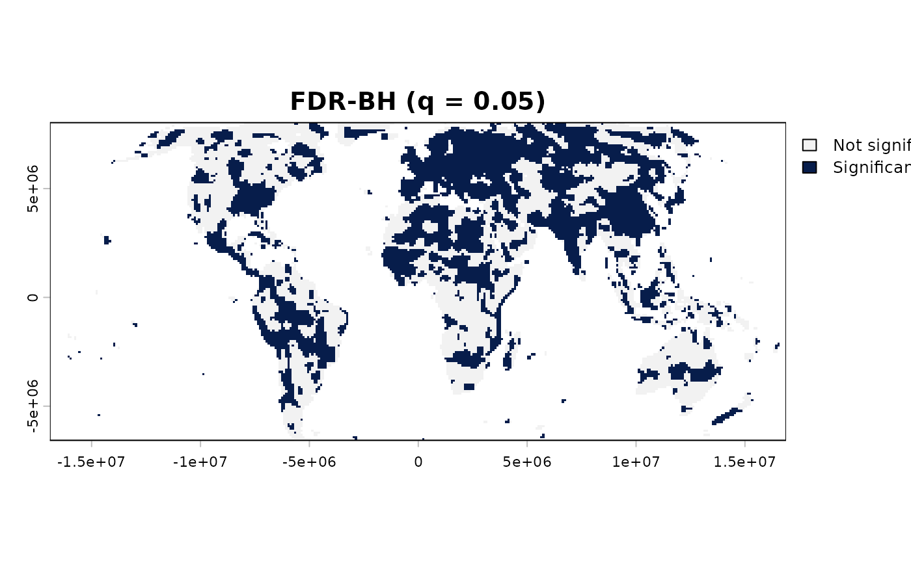
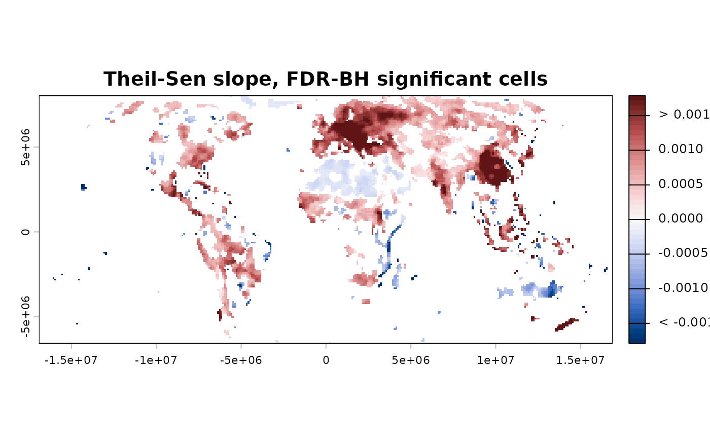
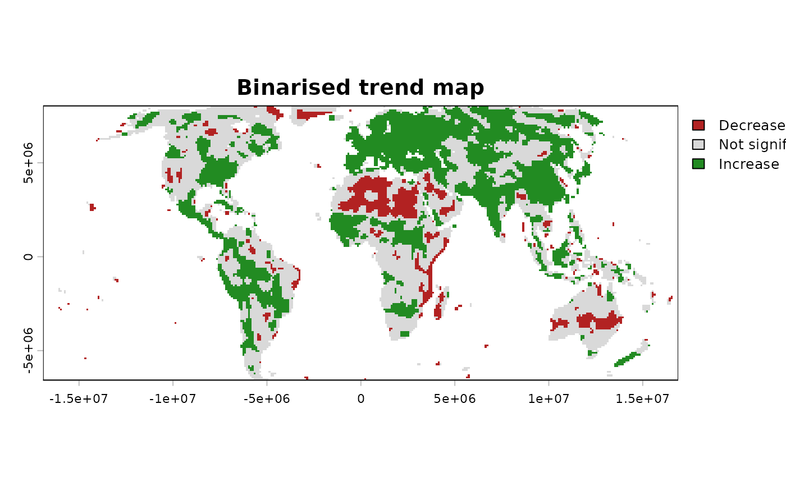

Implements the complete Robust Trend Analysis workflow for monotonic
trends in gridded raster time series. One of sptrends' two entry
points: chains slope_estimator(),
trend_test(), and fdr_correction() (method = "BH"
only), in that order, into the Robust Trend Analysis (RTA)
workflow. Each step's underlying parameters remain available
directly on the individual functions – workflow_rta() does not
replace them, it saves wiring the calls together for the common
case, and returns a single
"rta" object recognised by print.sptrends(). RTA is a
different, shorter published workflow from this package's other
integrated pipeline, workflow_tst() – see "Methodological comparison
with TST" below before choosing between them. Both are implemented
here because both are genuinely published methods, not because one
supersedes the other – this package aims to be a platform for
comparing such methods (see compare_detections()), not a vehicle
for only its own authors' preferred one.
Arguments
- x
A
terra::SpatRaster; each layer is one time step, in increasing chronological order. Used directly, unprewhitened – see "Comparison with TST" under "Methodological details" below.- cmk_args
A named list of extra arguments passed to
trend_test()(e.g.list(window_size = 5L)for a broader CMK region, orlist(method = "MK", n_cores = 4)). The default empty list preserves the 3 by 3 CMK region described by Neeti and Eastman (2011), as implemented in TerrSet's Kendall module; changing it creates an RTA-inspired variant rather than an exact reproduction of the published workflow.- theil_sen_args
A named list of extra arguments passed to
slope_estimator()(e.g.list(max_pairs = 20000, n_cores = 4)).smooth_neighbourhoodis left atslope_estimator()'s own default (FALSE, same asworkflow_tst()) unless you set it yourself – see "Computational considerations" above.- alpha
Numeric vector of significance thresholds used for reporting the (uncorrected) trend result – passed to
trend_summary()asalpha, and used as the single threshold fortrend_maps():0.05if it is one of the values inalpha(the default vector includes it), otherwise the strictest (smallest) value supplied. The three default values are not interchangeable:0.05is the conventional standard and the one actually used for the map;0.1is a more liberal threshold not unusual in exploratory trend studies;0.01is markedly more conservative. All three are shown side by side intrend_summary_tablefor context, not as equally valid choices.- q
Numeric. Target FDR level, passed to
fdr_correction()– not an adjusted or renamedalpha: it limits the expected false discovery proportion among rejected hypotheses. Seefdr_correction()for the full distinction.- report
Logical. If
TRUE(default), each step prints its own summary table and draws its diagnostic plots as it runs (same effect as calling each function directly withreport = TRUE). Set toFALSEfor silent, plot-free programmatic use.- verbose
Logical. Print progress messages and elapsed time for the complete workflow. Per-stage times are also returned in
timing.- n_cores
Integer.
1(default): every step runs sequentially.> 1: builds oneparallel::makeCluster()PSOCK cluster, shared across every parallel step below (currently the CMK and Theil-Sen steps) instead of each step creating and tearing down its own – avoiding the repeated process-spawn overhead of doing that two or three times in a row for what is, from the caller's own perspective, one parallel request. The cluster is closed automatically whenworkflow_rta()returns. Settingn_coresinsidecmk_args/theil_sen_argsdirectly still works exactly as before (each step falls back to building its own cluster from that value) – but only when this top-leveln_coresis left at its default of1; when both are set, this one wins and the per-stepn_coresinsidecmk_args/theil_sen_argsis ignored, since a single shared cluster and per-step separate ones cannot both apply to the same call. Mirrorsworkflow_tst()'s own identicaln_coresargument exactly.
Value
An object of class c("rta", "sptrends") (the second, shared
with workflow_tst()'s own return value, is for print()/summary()/
plot() – see print.sptrends()): a list
with
- theil_sen
The output of
slope_estimator(). Not smoothed by default – checktheil_sen_smoothedif you need to know whether it was (e.g. because you set it yourself).- theil_sen_smoothed
Logical: whether
theil_senwas computed withsmooth_neighbourhood = TRUE.FALSEby default.- trend
The output of
trend_test().- trend_summary_table
The output of
trend_summary()(invisible data frame).- fdr
The output of
fdr_correction(),method = "BH"only.- timing
A named list of elapsed seconds per step (
theil_sen,cmk,fdr), each measured withSys.time()around that step's own function call. Coarse (whole-step, not line-by-line) and not a substitute for a proper profiler, but enough for noticing which step dominates on your own data.
Use print.sptrends() for a one-line summary.
Details
When should I choose RTA?: want to reproduce the published 2024
workflow exactly -> use workflow_rta(). Want the more recent
workflow, including selective prewhitening and the adaptive BKY
correction -> use workflow_tst(). See "Methodological comparison with
TST" below for the reasoning behind each design choice.
Moran's I (spatial_autocorrelation()) is not part of this
pipeline, for the same reason it is not part of workflow_tst(): it is a
separate diagnostic for the spatial dependence assumption behind
FDR-BH, meant to be run independently (before or after) rather than
chained automatically, and pulling it in here would add a dependency
this function does not otherwise need – see the package vignette.
Function type: Core function – one of the two integrated published workflows in sptrends.
Typical use
raster time series
|
workflow_rta()
|
Theil-Sen slope + CMK significance + FDR-BH
|
one `rta` result containing every stageRTA analyses the supplied series without prewhitening. If the input
has a seasonal cycle, first use compute_anomalies() and pass its
anomalies raster.
Methodological details
How it works.
Input raster
|
slope_estimator -- how fast? (Theil-Sen)
|
trend_test -- is there a monotonic trend? (CMK)
|
FDR-BH correction -- which cells survive multiple testing?
|
"rta" objectAll three steps always run – unlike workflow_tst(), none of them
is optional here, matching the published RTA method exactly (see
"Comparison with TST" under "Methodological details" for what is
deliberately
different between the two workflows). Each step's own output is
kept in full on the returned object (see "Value" below) –
nothing is discarded once a later step begins.
Statistical assumptions: monotonicity and seasonality.
Every step here (the Contextual Mann-Kendall test, Theil-Sen) is
designed around a monotonic trend – a consistent tendency to
increase or decrease – not a periodic/seasonal cycle. If x has a
seasonal cycle (e.g. raw monthly data with an annual signal), remove
it first with compute_anomalies() and pass the anomalies to
workflow_rta(),
not the raw seasonal series.
Computational considerations.
Unlike the Mann-Kendall S statistic, the Theil-Sen slope needs every
pairwise slope in the series (n*(n-1)/2 per cell) to take their
median – it cannot be accumulated as a running sum, so it does not
scale the same way. For short series (a few dozen time steps) this is
unnoticeable; for long series (hundreds to thousands of steps, e.g.
multi-decade monthly data) it can become the slowest step in the whole
workflow. Tune theil_sen_args (max_pairs to subsample pairs,
n_cores to parallelise) – see slope_estimator(). smooth_neighbourhood
is left at slope_estimator()'s own default (FALSE) unless you set
it yourself – neither RTA nor TST originally included any such
smoothing (it is this package's own optional addition on top of both
published methods), so workflow_tst() does not default to it
either, for the
same reason.
Statistical assumptions: alpha and q.
This is one of the most common mistakes in gridded trend analysis, so
it is worth spelling out: alpha (e.g. 0.05) is defined for a
single hypothesis test. A raster is not one test – it is one test
per cell, potentially thousands of them run simultaneously. Applying
alpha cell by cell, as if each cell were the only test being run, is
exactly the multiple-testing error this package's FDR step exists to
fix (see the "Warning" section of ?trend_test); it is
not a harmless simplification.
It is common practice to set q equal to alpha (e.g. both 0.05) for
convenience and comparability between the uncorrected and corrected
results reported here – this function does not enforce that, alpha
and q are independent arguments. But equal values does not mean equal
meaning: alpha bounds the error rate of each individual cell's test,
while q bounds the expected proportion of false positives among all
the cells called significant after correction (see fdr_correction() for the
full distinction). Do not read trend_summary_table (based on alpha,
uncorrected) and the FDR results (based on q) as answering the same
question just because the numbers match. q = 0.05 has little reason
to change: it is the standard target FDR level in the literature this
package builds on, and lowering it (e.g. to 0.01) mainly costs
statistical power rather than offering a meaningfully different
guarantee.
Comparison with TST. RTA (Gutiérrez-Hernández & García, 2024) and
TST (Gutiérrez-Hernández & García, 2025; see workflow_tst()) share two
pillars – Theil-Sen and Contextual Mann-Kendall – but differ in two
deliberate, independent ways that this function keeps faithful to the
published RTA method, rather than silently reusing TST's later choices.
Difference 1: prewhitening. TST's first step, selective AR(1)
prewhitening, does not appear in RTA. Whether to prewhiten before a
Mann-Kendall-family test is a genuine, unresolved methodological debate,
not a settled question with one correct answer. Yue & Wang (2002) find
that prewhitening can substantially reduce power, particularly when a
real trend and real autocorrelation coexist: it can remove part of the
trend signal together with the autocorrelation. Bayazit & Önöz (2007)
argue the opposite case: skipping prewhitening when autocorrelation is
genuinely present can inflate the false-positive rate. RTA does not
prewhiten; TST prewhitens selectively, touching only cells whose own
Durbin-Watson statistic crosses a gating threshold (see prewhiten()),
specifically to limit unnecessary power loss. Neither position is
implemented here as universally correct.
Difference 2: FDR-BH only, not adaptive BKY. workflow_tst()
defaults to the two-stage adaptive BKY correction, which estimates how
many tested hypotheses are likely genuinely non-null (\(\hat\pi_0\))
and relaxes its threshold when substantial real signal is detected; see
fdr_bky(). RTA instead uses the original, non-adaptive
Benjamini-Hochberg procedure, which does not estimate \(\pi_0\) and is
derived to control FDR under the global null: the least favourable case
in which every tested hypothesis could be truly null. It therefore keeps
a more conservative guarantee that does not relax as more signal is found.
See fdr_correction() for the procedure itself.
These differences are independent: RTA's choice on one does not imply or require its choice on the other. They happen to be the less adaptive options in this package's two workflows, not because either dictates the other.
Limitations. RTA is intentionally faithful to its published method:
it does not prewhiten, it always estimates a Theil-Sen slope, and it uses
FDR-BH rather than exposing alternative corrections. Use
workflow_trends() when those stages or methods need to be configured.
Quality assurance. CMK, slope estimation, and FDR correction are
validated independently in their module functions. Integration tests
verify the RTA stage sequence, argument forwarding, shared parallel
resources, timing fields, S3 return structure, reporting, and agreement
between direct module calls and workflow outputs. See ?sptrends for the
complete internal and external quality-assurance strategy.
References
Source of this workflow (primary reference – this pipeline is a direct implementation of it):
Gutiérrez-Hernández, O. and García, L.V. (2024) Robust Trend Analysis in Environmental Remote Sensing: A Case Study of Cork Oak Forest Decline. Remote Sensing, 16(20), 3886. doi:10.3390/rs16203886
Step 1, Theil-Sen slope (see slope_estimator() for the full
reference list):
Theil, H. (1950) A rank-invariant method of linear and polynomial regression analysis. Indagationes Mathematicae, 12, 85-91 (Part I; published in three parts). No DOI available (pre-DOI-era publication).
Sen, P.K. (1968) Estimates of the regression coefficient based on Kendall's tau. Journal of the American Statistical Association, 63, 1379-1389. doi:10.1080/01621459.1968.10480934
Step 2, Contextual Mann-Kendall (see trend_test() for
the full reference list, including the foundational Mann-Kendall
statistic it builds on):
Neeti, N. and Eastman, J.R. (2011) A Contextual Mann-Kendall Approach for the Assessment of Trend Significance in Image Time Series. Transactions in GIS, 15(5), 599-611. doi:10.1111/j.1467-9671.2011.01280.x
Step 3, FDR-BH correction (see fdr_correction() for the complete
reference list):
Benjamini, Y. and Hochberg, Y. (1995) Controlling the False Discovery Rate: A Practical and Powerful Approach to Multiple Testing. Journal of the Royal Statistical Society: Series B, 57, 289-300. doi:10.1111/j.2517-6161.1995.tb02031.x
On whether to prewhiten before a Mann-Kendall-family trend test (see "Comparison with TST" under "Methodological details" above):
Yue, S. and Wang, C.Y. (2002) Applicability of prewhitening to eliminate the influence of serial correlation on the Mann-Kendall test. Water Resources Research, 38(6), 4-1-4-6. doi:10.1029/2001WR000861
Bayazit, M. and Önöz, B. (2007) To prewhiten or not to prewhiten in trend analysis? Hydrological Sciences Journal, 52(4), 611-624. doi:10.1623/hysj.52.4.611
See also
Other pipeline functions:
workflow_trends(),
workflow_tst()
Examples
# \donttest{
# Annual mean NDVI from the bundled environmental dataset.
r <- read_ordered_stack(example_data("vhp_ndvi"))
#> Temporal order auto-detected with pattern '(19[0-9]{2}|20[0-9]{2})'.
#> Temporal order verification (mandatory, cannot be skipped):
#> stack_position detected_number file
#> 1 1982 VHP_SMN_annual_ndvi_1982.tif
#> 2 1983 VHP_SMN_annual_ndvi_1983.tif
#> 3 1984 VHP_SMN_annual_ndvi_1984.tif
#> 4 1985 VHP_SMN_annual_ndvi_1985.tif
#> 5 1986 VHP_SMN_annual_ndvi_1986.tif
#> 6 1987 VHP_SMN_annual_ndvi_1987.tif
#> 7 1988 VHP_SMN_annual_ndvi_1988.tif
#> 8 1989 VHP_SMN_annual_ndvi_1989.tif
#> 9 1990 VHP_SMN_annual_ndvi_1990.tif
#> 10 1991 VHP_SMN_annual_ndvi_1991.tif
#> 11 1992 VHP_SMN_annual_ndvi_1992.tif
#> 12 1993 VHP_SMN_annual_ndvi_1993.tif
#> 13 1994 VHP_SMN_annual_ndvi_1994.tif
#> 14 1995 VHP_SMN_annual_ndvi_1995.tif
#> 15 1996 VHP_SMN_annual_ndvi_1996.tif
#> 16 1997 VHP_SMN_annual_ndvi_1997.tif
#> 17 1998 VHP_SMN_annual_ndvi_1998.tif
#> 18 1999 VHP_SMN_annual_ndvi_1999.tif
#> 19 2000 VHP_SMN_annual_ndvi_2000.tif
#> 20 2001 VHP_SMN_annual_ndvi_2001.tif
#> 21 2002 VHP_SMN_annual_ndvi_2002.tif
#> 22 2003 VHP_SMN_annual_ndvi_2003.tif
#> 23 2004 VHP_SMN_annual_ndvi_2004.tif
#> 24 2005 VHP_SMN_annual_ndvi_2005.tif
#> 25 2006 VHP_SMN_annual_ndvi_2006.tif
#> 26 2007 VHP_SMN_annual_ndvi_2007.tif
#> 27 2008 VHP_SMN_annual_ndvi_2008.tif
#> 28 2009 VHP_SMN_annual_ndvi_2009.tif
#> 29 2010 VHP_SMN_annual_ndvi_2010.tif
#> 30 2011 VHP_SMN_annual_ndvi_2011.tif
#> 31 2012 VHP_SMN_annual_ndvi_2012.tif
#> 32 2013 VHP_SMN_annual_ndvi_2013.tif
#> 33 2014 VHP_SMN_annual_ndvi_2014.tif
#> 34 2015 VHP_SMN_annual_ndvi_2015.tif
#> 35 2016 VHP_SMN_annual_ndvi_2016.tif
#> 36 2017 VHP_SMN_annual_ndvi_2017.tif
#> 37 2018 VHP_SMN_annual_ndvi_2018.tif
#> 38 2019 VHP_SMN_annual_ndvi_2019.tif
#> 39 2020 VHP_SMN_annual_ndvi_2020.tif
#> 40 2021 VHP_SMN_annual_ndvi_2021.tif
#> 41 2022 VHP_SMN_annual_ndvi_2022.tif
#> 42 2023 VHP_SMN_annual_ndvi_2023.tif
 #> Stack built: 42 layers, 146 x 338 cells.
#> >> [read_ordered_stack()] elapsed: 0.06 s
# Run the full workflow: Theil-Sen -> Contextual Mann-Kendall ->
# FDR-BH (only BH -- see "Comparison with TST" above
# for why this function does not offer BKY as an option).
result <- workflow_rta(r, report = FALSE, verbose = FALSE)
# An "rta" object: printing it gives a one-line-per-step summary
# (the Theil-Sen slope range, the trend test's cell count, and how
# many cells are significant after FDR-BH correction).
result
#> <Robust Trend Analysis (RTA) result>
#> Theil-Sen slope: 15675 cells, range [-0.009883, 0.008481]
#> Trend test: 15675 cells (Sm statistic)
#> Significant after FDR-BH: 7965 (50.8%)
# The same plot() methods used throughout this package, rather than
# reconstructing either view by hand: which cells are significant
# after FDR-BH, and how fast those cells are changing.
plot(result, which = "significance")
#> Stack built: 42 layers, 146 x 338 cells.
#> >> [read_ordered_stack()] elapsed: 0.06 s
# Run the full workflow: Theil-Sen -> Contextual Mann-Kendall ->
# FDR-BH (only BH -- see "Comparison with TST" above
# for why this function does not offer BKY as an option).
result <- workflow_rta(r, report = FALSE, verbose = FALSE)
# An "rta" object: printing it gives a one-line-per-step summary
# (the Theil-Sen slope range, the trend test's cell count, and how
# many cells are significant after FDR-BH correction).
result
#> <Robust Trend Analysis (RTA) result>
#> Theil-Sen slope: 15675 cells, range [-0.009883, 0.008481]
#> Trend test: 15675 cells (Sm statistic)
#> Significant after FDR-BH: 7965 (50.8%)
# The same plot() methods used throughout this package, rather than
# reconstructing either view by hand: which cells are significant
# after FDR-BH, and how fast those cells are changing.
plot(result, which = "significance")

plot(result, which = "slope")

plot(result)

# }